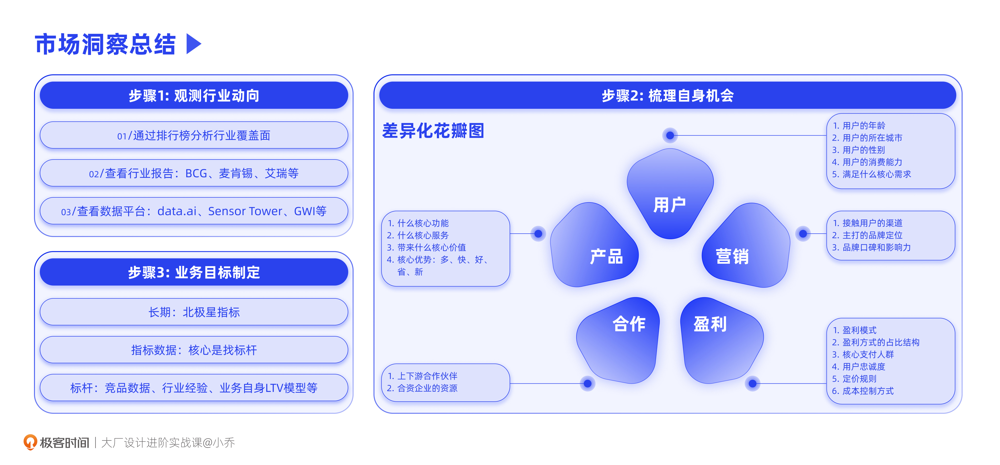

- 00 开篇词 升维思考，是设计师有效成长的第一步.md.html
- 01 业务周期：0-1-10-100-N的发展策略.md.html
- 02 商战模式：如何在商业竞争下突出重围？.md.html
- 03 市场洞察：如何找寻差异化撬动支点？.md.html
- 04 用户洞察：不懂用研的设计师不是好职场人.md.html
- 05 用户画像：是形式主义还是真的有效？.md.html
- 06 用户旅程：挖掘不同用户的核心机会点.md.html
- 07 职场晋升：看懂晋升的“游戏规则”.md.html
- 08 设计价值升级：五层进阶突破成长.md.html
- 09 基础价值 核心三原力：如何将需求转化为设计稿？.md.html
- 10 基础价值 第一性原理：从问题本质解决问题.md.html
- 11 基础价值 设计复盘：只是量化设计结果吗？.md.html
- 12 二级价值 负向网兜：如何全面发现负向问题？.md.html
- 13 二级价值 设计自驱：如何做好项目Owner？.md.html
- 14 二级价值 自驱合作：如何反内卷处理合作关系？.md.html
- 15 三级价值 增长误区：思维惯性陷阱和虚荣数据.md.html
- 16 三级价值 用户增长历程：AARRR是万能的吗？.md.html
- 17 三级价值 产品增长：如何做好产品创新？.md.html
- 18 三级价值 运营增长：如何自驱营销活动和投放？.md.html
- 19 三级价值 品牌增长 抢占心智，赢得人心红利.md.html
- 20 三级价值 增长实操：如何“步步为营”推动落地？.md.html
- 21 四级价值 L型赋能：让T型人才发挥更大价值.md.html
- 22 四级价值 “网状对比”解决共性痛点.md.html
- 23 五级价值 商业画布：设计师可以担任业务方吗？.md.html
- 24 五级价值 共创洞察：如何做好一次完善的workshop？.md.html
- 25 五级价值 领导力觉醒：写给新晋管理者.md.html
- 26 工作选择（上）：2B or 2C设计师？如何规划领域？.md.html
- 27 工作选择（下）：大厂 or 小厂？如何选择赛道？.md.html
- 28 人才地图：认知自我，成为高潜力人才.md.html
- 29 成长历程：如何从设计小白成长为团队负责人？.md.html
- 30 冰山模型：如何成为让面试官欣赏的“面霸”？.md.html
- 31 作品集指导：什么是面试官喜欢的作品集？.md.html
- 用户故事 什么是职场设计师进阶的正确姿势？.md.html
- 结束语 突破自我，成人达己.md.html
- 捐赠
03 市场洞察：如何找寻差异化撬动支点？
你好，我是小乔。
在之前的两节课中，我们一起探讨了业务在全周期的不同阶段应该重点发力的策略，也学习了根据我们入局市场的时机和排位，采用不同策略突出重围的方法，从而帮助我们进一步推导适合设计师发力的项目。
相信你已经明白，懂得业务和具备设计策略思维对于设计师成长的意义。我们只有具备升维思考的能力，才能更好地降维解决问题。
许多设计师会疑惑，我提了很多优化需求，为什么总是不了了之呢？这正是由于我们的视角与认知还不够全面，目光只聚焦于手头上的事情，缺少了业务全局观。如果不能以更高维度思考业务目标，就会导致一叶障目，抓不住核心机会。
业务全局观 = 市场面分析 + 用户面分析
我们一个个来看。Top down，从上往下洞察，就是从市场面分析；Buttom up，从下往上洞察，就是从用户面分析。将两者结合在一起，我们才不会顾此失彼，从而以上帝视角分析机会点。这节课，我们先一起探讨市场面的洞察方法，从下节课起，会探讨用户面的分析方法。
通常，市场宏观分析并不是设计师的工作，而是由企业的智囊团或战略部门负责。因此我会将重点放在对设计师有帮助的分析方法上，便于我们在业务中实操。
市场面洞察方法
我将市场面的洞察方法分为了三大步骤：
步骤1，需要观测行业动向，包括行业资讯、目标市场数据、竞品数据等；
步骤2，要梳理我们企业自身的情况，找到可以发力的核心变量，从而制定业务目标；
步骤3，根据业务目标，对标行业内的相关数据、参考竞品，来推导恰当的指标。
接下来，我们先从第一步开始了解。
步骤1：观测行业动向
当我们在业务定位和产品方向上想要有所输出时，首先应当有所输入。这就可以通过分析目标市场的行业覆盖面、查看行业数据与报告、监控竞品动态等方式，来吸收市场信息。
我们要明白的是，机会点往往埋藏在信息差里，打破信息差，站在全局视角思考问题，就会争取到更多机会，从而提出更有价值的设计方案。这也是资深的设计师比起设计技法类的设计师来说，需要具备的核心优势。
方法1：通过产品矩阵分析覆盖面
通常选择哪个国家地区作为目标市场由企业战略布局决定，决定前会分析目标国家的安全性、政党稳定性、人口规模、人文情况、经济走势、对中国企业的限制程度等等。
当企业确定要布局这个市场时，我们该如何判断以哪个行业入手呢？可以查看当地App Store和Google Play的下载排行榜，并将排名前50或前100的App按行业分类整理，比如IM、金融、电商、社交、音乐、游戏、本地生活等。观察这些App的疏密程度以及公司所在地，就可以大概判断出我们可以入手的行业。
以下图为例，这是某国家下载榜单前50名的产品矩阵，你会关注到图中的哪些数字，提取出哪些信息呢？
比如，排名前50的App中没有外卖、打车等本地生活相关的产品；目标市场受欢迎的App以欧美产品为主，前50名里有27个，可初步判断该国家受到欧美文化辐射较大；资讯类App完全依赖于欧美地区的主流产品，缺乏本地资讯；金融App只有本地企业，初步猜测当地政策对于金融产品较为谨慎，仅扶持本地金融企业；教育类市场较为空白，仅有2个产品登榜。
因此，我们会发现，在该地区发展外卖、打车、大众点评等本地生活业务，做以当地新闻为主的本地化资讯类产品，入局教育行业，都是可行方向。选择这么多，那么该如何判断入手哪个行业呢？可以通过用户访谈来判断诉求的强度，也要找战略同学帮忙统计市场规模，挑选规模大、诉求强，且公司资源可以落地的行业入手。
对于设计师来说，为什么需要明白目标市场适合做什么业务呢？
因为这样我们才会知道，在这个地区做某个行业的竞争优势是什么。当业务逐渐成熟，资源更加丰厚时，部门往往会立项第二个、第三个App，在这个目标市场形成一整套App矩阵；或者当某个App的规模迅速增长，也会探索其他相似的市场，进行多国家上线。
此时，我们不仅清楚业务规划，更具备了应有的全局观，就可以主动提出高优先级的项目，甚至可以担任业务方。是的，你没有看错，在我们下一章课程中会讲到设计师的五级进阶，第五级就是设计师担任业务方。在我任职过的企业中，有许多出色的业务方，都是设计师出身。
方法2：查看行业报告
有了初步的业务方向判断，如何进一步加深了解呢？我们可以查阅行业报告，也可以使用数据平台来观察分析。
需要注意的是，网络上的行业报告是良莠不齐的。有些错误的报告或断章取义的信息，会给我们的判断造成误导。因此，我们要注意数据源头必须是可靠的。可靠信息的主要源头有3大类：顶级咨询公司研报、国家官方数据库、大厂研报。我已将这些数据源整理在下表中，也提供了报告集合型网站，方便你高效检索。
看到这里，你可能会说：我就是个设计，我看不懂。其实这些公司官方产出的报告，就是为了让人看懂。他们之所以会免费产出行业报告，正是以此作为自己的品牌宣传，获取客户和收入。
搜索信息能力和自主学习能力，对我们的成长非常重要，因为机会在来自于信息差。真正的能力，是获得能力的能力。
方法3：查看数据平台
除了行业报告以外，设计师也要擅长通过数据平台找寻机会点。数据是做决策时最直接的依据，数据平台就像安检的扫描仪，把竞品做了什么、取得了什么结果，都透明地呈现给我们。
举个例子，如果我们在做某个国家的产品，想要投放广告吸引更多用户注册，到底是用Facebook，还是在YouTube上找个KOL，还是在当地电视台找明星代言呢？此时，就需要调研用户都是在哪些渠道看到产品广告并形成转化的，直接查看竞品的数据，就可以知道答案。
给你推荐3个大厂常用的数据平台，data.ai、Sensor Tower、GWI，只要研究的市场是相对没有那么落后的联网地区，都可以通过这3个数据平台查到想要的市场竞品数据。如果想要查看一个国家的移动通讯使用情况，比如总人口里有多少人使用手机，可以通过GSMA查询。
以data.ai为例，可以看到全球范围内各个行业的App数据、各个国家的应用排行等。可以查询某个App的每日排名、下载量、营收、活跃用户数、留存等数据，这样就可以实时监控竞品的发展情况。除此以外，还有许多细节信息，比如ASO关键词、在哪些平台投放广告、每次版本更新了哪些功能等。以下图为例，就是TikTok在2021年12月12日上线新版本时的新旧内容对比。
这些数据平台有许多付费功能，如果公司条件不允许，你也可以尝试使用百度指数这个免费查询的数据平台。在之后的进阶课程中，我也会通过具体案例来讲解使用方法。
步骤2：梳理自身机会
在了解行业动向后，就需要梳理自身的业务规划了。如果想要理清当前业务的现状，可以使用业内的成熟模型，例如：Business Canvas商业画布、SWOT矩阵、波特五力分析、STP理论、PEST模型、BCG矩阵、GE矩阵等等，这些模型的核心原理都是帮助我们梳理当下的市场环境和自身优劣势，避免我们由于每天承担螺丝钉的角色，而失去上层思维。
当我们对自身业务有了全面了解后，就可以尝试找出它能够发力的差异化机会点了，差异化往往决定了一个业务的存亡和增长。这里，我想向你介绍一个我自己常用的分析模型，可以帮助你梳理业务的差异点，我取名为“差异化花瓣图”。
我们可以从五个角度寻找差异化，从而与竞争对手抢夺市场份额。我将这五个角度抽象出来，分别是用户、产品、营销、合作、盈利。
角度1：用户
从用户的角度来说，我们要思考自己的业务和目前市面上已经有的竞品相比，可以有哪些差异。从用户的年龄、性别、所在城市、消费能力、不同的需求等方面，都是可以去深度挖掘差异化的。
比如江小白、得物、Snapchat，都选择了年轻用户群体，从而和市面上的巨头拉开差异。来往和微信同样做2C的IM产品时，没有水花，但当转型做了2B的IM产品后，来往成功创业成为了钉钉。拼多多就是在用户地区上做了差异化，当京东主打一线城市时，拼多多主打四、五线下沉城市，赶超了京东。
角度2：产品
从产品服务的角度来说，可以探索与竞品主打的不同功能价值，从多、快、好、省、新五个方向去思考。需要注意的是，不论是从资源还是企业基因来看，都很难将五个优势一网打尽，因此，业务可以集中资源，挑选1-2个核心优势来发展。
比如拼多多的核心竞争力就是“省”，它通过工厂直销，薄利多销降低单价，大量订单降低物流成本等方式，显现出价格优势。相较于淘宝、京东来说，拼多多起步较晚，但在用户量上远超京东，从2021年Q1的财报看，活跃用户达到8.238亿，相当于我国60%的人都在使用。
角度3：营销
不管是用户触达的渠道，还是主打的品牌定位，都可以和竞品拉开差异。我们之前讲过lululemon的案例，它主打的就是时尚、好看、可以外穿的运动服装，和主打全能的Nike进行品牌定位差异化。
再以小罐茶为例，小罐茶主打商务人士的送礼和社交洽谈场景，打破传统茶艺的繁琐步骤，让不那么懂茶也不想懂茶的商务人士可以高效品茶。当传统茶艺品牌的门店都走古典风格时，小罐茶通过高奢风的线下门店，让用户认识这个新兴品牌。
角度4：合作
每个业务都有自己的上下游合作伙伴，比如产品是和谁合作生产的，对方的优势是什么，下游是和谁合作销售的，是分销还是直营；我们业务的智囊团是自己企业的人，还是外部聘请了精通这个领域的职业经理人。有差异化的合作伙伴和方式，可以为我们带来不一样的优势。
相比于企业微信和飞书来说，钉钉的市场占有率处于领先地位。这种优势是如何形成的呢？
在早期，钉钉的合作伙伴是淘宝体系，依托于淘系的客户群体，钉钉积累了高粘性用户，也很早就有了PaaS雏形。从2020年起，“云钉一体”战略使阿里云成为了钉钉的合作伙伴，因为协同办公行业归根到底还是各家背后云能力的竞争。钉钉在不同发展阶段，选择了符合该阶段目标的合作伙伴，使自己具备强大实力。
角度5：盈利
盈利的方式，根据行业不同，会有会员、广告佣金、内容付费等多种方式。每家企业的用户，对于价格的敏感度是不同的；每个不同的行业，市场对于定价的反应也是不同的。在盈利模式上，也可以做出差异化。
以手机品牌为例，国内大部分手机厂商通过广告服务盈利。而小米除了广告以外，选择了通过扩充上下游和生态圈获得盈利，比如小米手环、充电宝、照明灯具、智能厨卫等等。
我们会发现，这五个差异化优势，往往是相辅相成的，其中一个的差异化，会相应影响其他的几个差异化，从而形成我们和竞品抢夺市场的核心优势。
步骤3：业务目标制定
通过观测行业动向，可以找到蓝海市场或蓝海行业，找到适合下手的业务；通过梳理自身的机会点，可以找到我们业务的核心竞争优势，获得踏进市场的入场券。接下来，就该确定业务的目标，并敲定相应的指标了。
如果你经常查找网上的方法论，应该听过北极星指标，也就是公司全员统一看齐的第一关键指标。比如淘宝看GMV，知乎看内容发布量，得到看学习用户数，Zoom看总会议数。这些北极星指标都是为了反映业务为用户带来的长期价值，因为只有“利他”的企业才能长青。
为了达成目标，业务就会制定长期和短期的各项指标。这些数额，老板们都是怎么敲定的呢？是找到了什么依据，还是拍脑袋定的呢？
为保证数据指标的科学性，在敲定数据之前，必定是做过大量调研的。制定数据的核心逻辑就是找标杆，也许是参考行业报告，也许是对标竞品的数据，也许是根据自身业务的增长趋势来模拟数据。
比如，市面上创业成功的几个IM产品，切入时机都是在各个国家的智能手机渗透率刚达到20%左右。如果我们现在想要进入某国市场，通过对比该国的所有IM产品，发现只有注册用户数覆盖该国家30%以上的智能机用户时，产品才能幸存下来，而该国在1年后，智能机手机渗透率就会超过20%。
如果你是业务负责人，当得到了以上信息，会怎样制定指标呢？保守来说，注册用户数需要在1年内覆盖该国30%以上的智能机用户。通常指标在制定时适当激进，更有助于团队突破创新。
是的，不管长期还是短期的业务目标和指标，在每个看似拍脑袋的背后，都有数据支持，依赖于专家访谈、竞品观测、行业经验、自身趋势等。我们设计师在成长过程中，需要逐渐成为主动推进项目、甚至带领业务的角色，目标指标也需要有理有据。
今日小结
今天，我们一起探讨了如何从市场洞察的角度，找出业务差异化机会点。虽然专业的市场调研，主要是战略职能的工作，但我们设计师也有简单可实操的方法，从而有机会缩小信息差，找到可以推动项目的机会点。
市场洞察主要分为三个步骤：观测行业动向，梳理业务自身的机会点，以及给长、短期的业务目标制定指标。
在观测行业动向上，我们学会了通过下载排行榜来看空缺的生态位，通过查看行业报告和数据平台来分析业务机会点；在梳理自身业务机会上，我们也学会了通过“差异化花瓣法”分析自己业务的核心竞争力；在业务目标制定上，我们明白了制定数据的核心逻辑就是找标杆。

在我们设计师成长的过程中，随着我们逐渐开始自驱项目，甚至立项成为业务方，就成为了需要制定业务目标和推测指标的角色。具备全局观，不管在我们成长的哪个阶段，都有助于我们找到更好的机会点和解决方案。
最后我们引用张一鸣的话来结束我们今天的课程，“对事情的认知是最关键的，你对事情的理解，就是你在这件事情上的竞争力。”
互动时刻
回顾你过往的工作，是否曾经固执于手头的项目，而忽略了更重要的业务机会呢？对于现在正在负责的项目，你认为核心的差异化竞争力是什么呢？
欢迎把你的经历和思考在留言区分享出来，与我和其他同学一起探讨。我们建立了一个读者交流群，欢迎你的加入！如果你觉得有所收获，也欢迎把文章分享给你的朋友一起学习。我们下节课见。
© 2019 - 2023 Liangliang Lee. Powered by gin and hexo-theme-book.